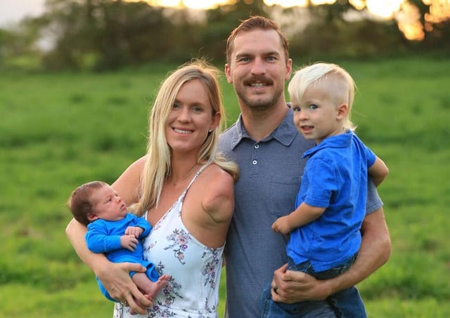

Biography:
Bethany Meilani Hamilton was born in Lihue, Kauai, Hawaii on February 8, 1990. Her parents names are Sheri and Tom Hamilton. She is the youngest of three and has two older brothers, their names are Noah and Timonthy. She began surfing competively when she was 8 years old.
Bethany often surfed with long time best friend Alana Blanchard. They were homeschooled together, by Bethany's mom, so the two girls could have more time for surfing. Alana was with Bethany when the shark attacked her.
On October 31, 2003, when Bethany Hamilton was just 13 years old, she was attacked by a 16 foot tiger shark and resulted in the loss of her left arm. She was rushed to the hospital, and immediately had surgery. She thankfully recovered in just a few days. About a month after she was attacked, she was back in the water practicing her surfing. After she lost her arm, she went on, and still continues to succeed in national and international competitions.

Now, Bethany is married to Adam Dirks and has two boys. The oldest is Tobias Dirks and the youngest is Wesley Phillip Dirks.